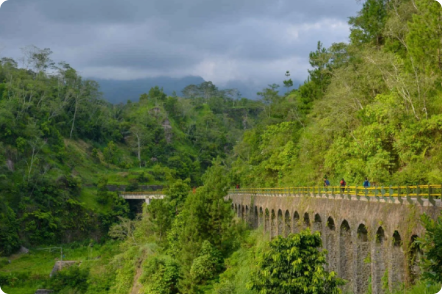

visitingjogja.jogjaprov.go.id adalah Portal Informasi Seputar
Pariwisata Yogyakarta.
Cari informasi wisata....
Cari
REKOMENDASI WISATA
Pantai Parangtritis
Pantai ini merupakan pantai yang cukup luas
di Yogyakarta.

Plunyon Kali Kuning
Plunyon Kalikuning merupakan salah satu destinasi wisata
alam yang menyejukan.
Candi Prambanan
Candi Prambanan, terletak di Yogyakarta, adalah kompleks
candi Hindu terbesar.
Museum Ullen Sentalu
Museum Ullen Sentalu adalah sebuah museum seni dan
budaya Jawa.
Heha Forest
HeHa Forest dikenal dengan berbagai spot foto menarik
dan unik.
Gamplong Studio Alam
Studio Alam Gamplong adalah sebuah kompleks studio
outdoor.
VIDEO


EVENT TERDEKAT

BERITA TERKINI

Perubahan Retribusi Pantai Parangtritis Bantul
30 April 2024
Sobat Visiting Jogja, kami sampikan info terbaru dari
Pemda Kab. Bantul terkait Besaran tarif retribusi jasa
usaha atas pelayanan tempat rekreasi, pariwisata dan
olahraga. Mulai...

Lenterne Festival De Paris-Pantai Parangtritis
28 Agustus 2018
Sedikitnya 1.000 lampion akan diterbangkan dalam acara
Lenterne Festival De Paris. Lampion tersebut akan
diterbangkan pada hari Sabtu, 15 September 2018...
Kenali Rip Current palung laut Parangtritis
29 Desember 2022
Sobat Visiting Jogja , dibalik pesonanya, pantai
Parangtritis menyimpan misteri yang harus kita waspadai.
Yakni adanya palung laut yang menyebabkan terjadinya Rip
Current. Apa...

Atraksi Udara Jogja Air Show 2019 Hiasi Langit
Parangtritis
26 Agustus 2019
Minggu (25/8) kemarin, langit Pantai Parangtritis dihiasi
oleh atraksi udara seperti microlight, aeromodeling,
paramotor, terbang layang, gantole, terjun payung,
layang-layang...
WESTLIFE WITH LOVE TOUR 2024 di Jogja
7 Juni 2024
Setelah 2 tahun, Westlife kembali dan siap mengguncang
Yogyakarta dengan konser terbarunya!
Jogja Violin Fest 5
8 Juni 2024
Sebanyak 300 pemain biola atau violinist dari berbagai
kota di Indonesia bakal unjuk kebolehan di Jogja Violin
Fest 2024.
KERONTJONG PESISIRAN MATARAMAN
8 Juni 2024
KERONTJONG PESISIRAN MATARAMAN
✨“Swara Ibu Senja”✨

Petualangan Gizi Seimbang di Museum Pisang
9 Juni 2024
Libur sebentar lagi nih. Bestie belum ada acara bersama
keluarga? Ga usah bingung, yuk ikuti SelebrASI HUT AIMI
DIY ke-12

Ekspectanica Yogyakarta 2024
8 & 9 Juni 2024
KERONTJONG PESISIRAN MATARAMAN
✨“Swara Ibu Senja”✨

ARTJOG 2024 – Motif: Ramalan
28 Juni - 1 September 2024
Libur sebentar lagi nih. Bestie belum ada acara bersama
keluarga? Ga usah bingung, yuk ikuti SelebrASI HUT AIMI
DIY ke-12